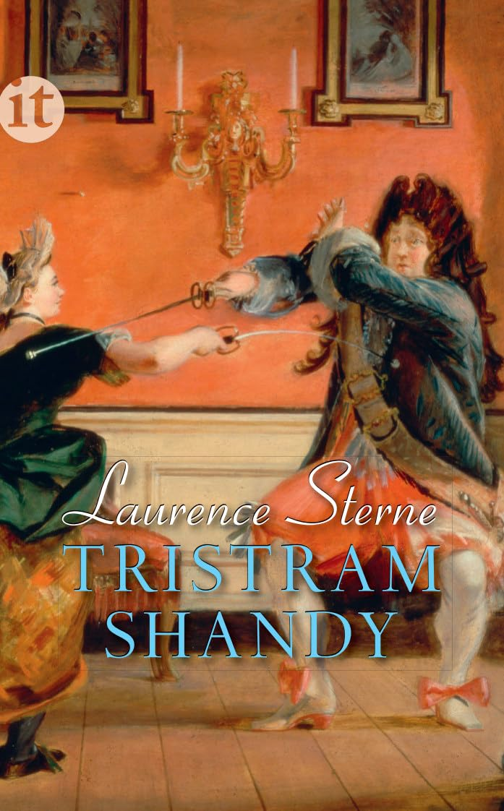

Leben und Ansichten von Tristram Shandy, Gentlemen
Der Roman wurde in der Geschichtsvorlesung empfohlen, weil er die Ereignisse und Abläufe auf eine auf eine Art chaotische Weise schildert und von einer Abschweifung in die nächste wechselt. Der Auto versucht trotzdem die Ereignisse in einem Ursache-Wirkung Verhältnis darzustellen. Trotzdem schlägt der Zufall oft zu und hintertreibt die Pläne der Handelnden. Prof. Maier meinte, dass man daraus für die Geschichtsschreibung lernen könne.
Der Roman handelt von der Geburt und dem Leben des Tristram Shandy. Sein Vater war davon überzeugt, dass es wichtig für eine Person ist, dass sie die richtige Nase und einen geeigneten Vornamen hat. Insbesondere war Tristram ein Name, der verboten gehöre. Er war überzeugt, dass die Wissenschaft besser ist als die traditionelle Geburtshilfe einer Hebamme und holte einen Arzt dazu. Leider ist dann alles schief gegangen. Die Geburtszange des Arztes hat seinem Sohn die Nase zerquetscht und wegen eines Fehlers in der Kommunikation wurde er auf den Namen Tristram getauft. Der Autor spricht den Leser immer wieder persönlich an und es gibt so viele Einschübe, dass es einem nie langweilig wird. Die Sprache ist ein wenig antik aber gut verständlich und lustig.
ISBN: 978-3458359685